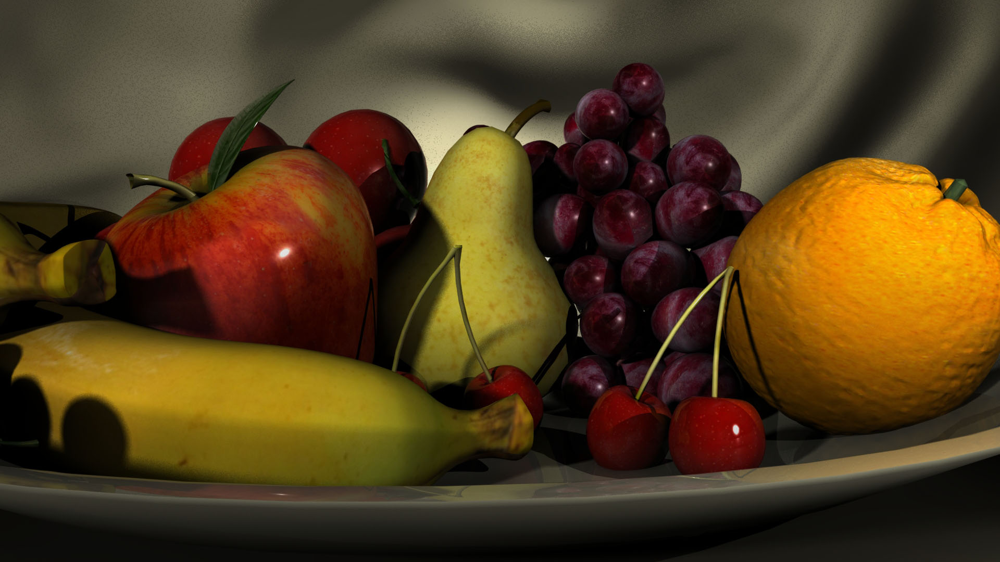
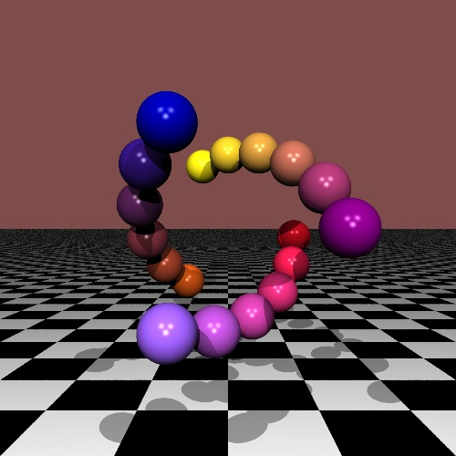
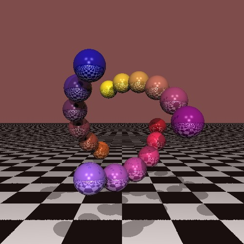
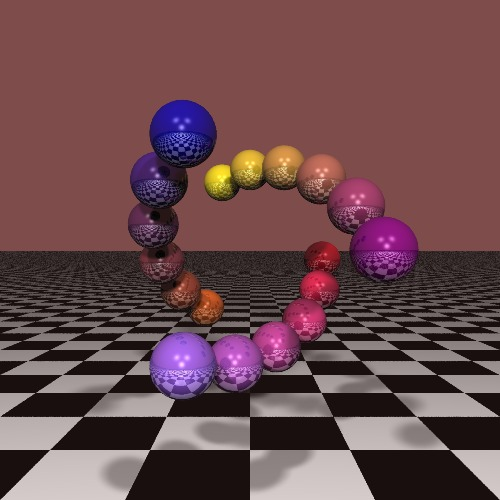

FROOT BOLE
No features implemented
Anti Aliasing
Reflections
Soft Shadows

All 3
Dr. Davis, Download these 3 files into a directory with rtlib.h and rtlib.o, and you should have no problems running it. You can enable or disable the features by setting ENABLE_feature to 0 at the top of caweeks_rt.c
caweeks_rt3.c